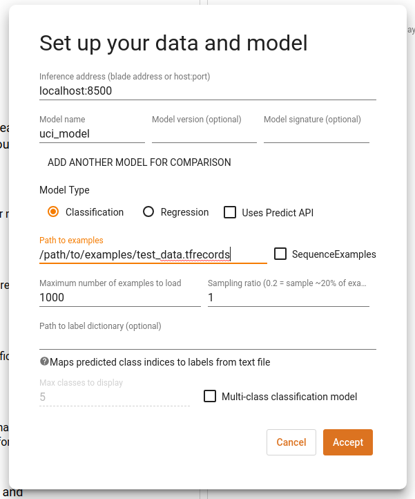
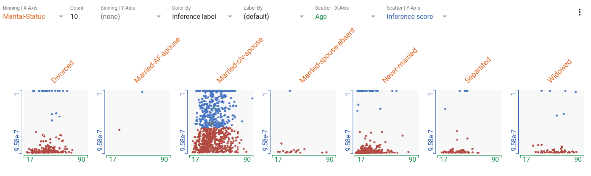
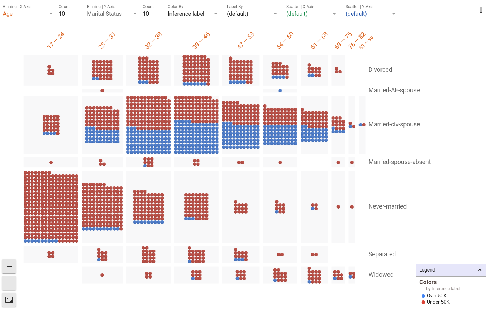
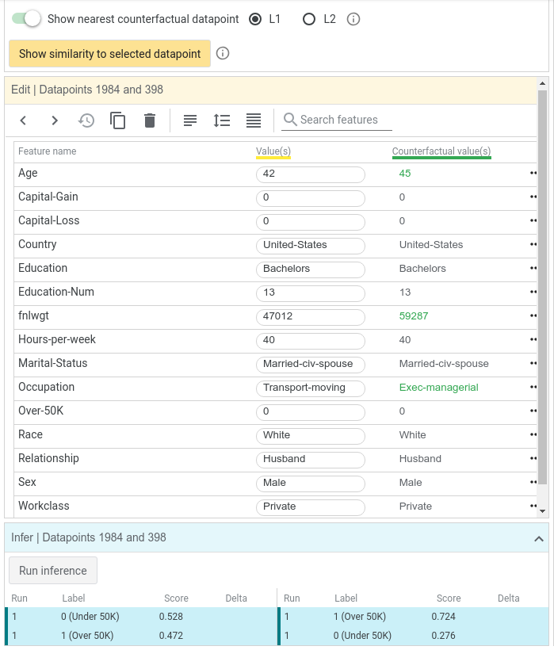
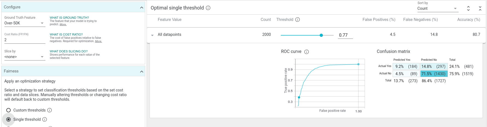

A Walkthrough of the What-If Tool
In this walkthrough, we explore how the What-If Tool (WIT) can help us learn about a model and dataset.
Our Dataset and Model
The UCI Census dataset is a dataset in which each record represents a person. Each record contains 14 pieces of census information about a single person, from the 1994 US census database. This includes information such as age, marital status and education level. The prediction task is to determine whether a person is high income (defined as earning more than $50k a year). This specific dataset and prediction task combination is often used in machine learning modeling and fairness research, partially due to the dataset's understandable attributes – including some containing sensitive classes such as age and gender, and partially due to a clear, real-world prediction task.
Using a training set of ~30,000 records, we've trained a simple linear classifier for this binary classification task. For any datapoint that we provide it, the model will return a score between 0 and 1 for how confident it is that the person represented by the datapoint is high income. 1 means that the model is entirely confident that the datapoint falls in the high income category, and 0 means that it is not at all confident
Now let's explore how the trained model performs on 5,000 records from a test set that we held out. At each point, we'll highlight statements about the things WIT helped us learn about our dataset and trained model in blue.
Setting up WIT
WIT in Notebooks
To use WIT inside a notebook, create a WitConfigBuilder object that specifies the data and model to be analyzed. Then, provide this object to the WitWidget object. This documentation provides a step-by-step outline for using WIT in a notebook. Follow along this walkthrough using this colab notebook in which we train a UCI census model and visualize it on the test set.

WIT in TensorBoard
To use WIT within TensorBoard, your model needs to be served through a TensorFlow Model Server, and the data to be analyze must be available on disk as a TFRecords file. Navigate to the web address of your TensorBoard, select "What-If Tool" from TensorBoard's dashboard selector. Fill out the path to the TFRecords file, the host/port of the running TensorFlow Model Server, and the name of the model on that model server, that you wish to test. Click "Accept". For more details, refer to the documentation for using WIT in TensorBoard.

Initial Views
Once we've pointed the What-If Tool to our model and dataset, the first thing we see is the dataset visualized as individual points in Facets Dive. Each datapoint is colored by the category that the model predicted for it, i.e. the inference label". Blue points represent people that the model inferred are high income and red points represent those whom the model inferred are low income. Additionally, the points are laid out top to bottom by a score for how confident the model is that the person is high income, called "inference score". By default, WIT uses a positive classification threshold of 0.5. This means that if the inference score is 0.5 or more, the datapoint is considered to be in the positive class, i.e. high income. As a result, points in the top half of the visualization are blue whereas those on the bottom half are red. We will show later in this tutorial how to change this threshold. The settings that created this view are visible in the top control bar (see controls for "color by" and "scatter on Y-Axis by").

What can we learn from this initial view? There are definitely more red points than blue points, which means that the model predicts more people as low income than high income. A lot of points are bunched at both the bottom and top of the visualization, which means that our model is often very confident that a person is low income or high income.
Simple visual analyses
Let's add some more data to this chart. We can set the x-axis scatter to a feature of the dataset, such as education level. In our dataset, this is described as a number that represents the last school year that a person completed. We now see a scatterplot of education level versus inference score. We can immediately see that as education level increases (as we move right on the plot), the number of blue points increases. So the model is clearly learning that there is a positive correlation between education level and being high income. Having higher education levels tend to lead to more specialized and better paying jobs, so it makes sense that the model has picked up on this pattern in the training data.

Facets Dive is incredibly flexible, and can create multiple interesting visualizations through its ability to bucket, scatter, and color datapoints. While the possibilities are endless, here is a small list of visualizations that you may find interesting with this model.


Small Multiples Scatterplots | Age vs Inference Score for each Marital Status
Set the binning of X-axis by marital status, scattering of X-axis by age, scattering of Y-axis by inference score and color by inference label.
- Married-civ-spouse in the most common marital status, followed by divorced and never married. The other categories have many less records.
- Married-civ-spouse seems to have the most balance between those predicted to have high income and those predicted to have low income. The other categories are heavily weighted towards predicting earning less.
Histogram | Hours worked with Marital Sstatus indicated
Set the binning of the X-axis to hours-per-week. Remove the scatterplot settings by using "(default)". Color by marital status.
- 31-40 hours per week is the largest bin for hours worked in a week.
- There also seems to be a bump in the 50-59 bin.
- Some people reported working up to 99 hours a week.

2D Histograms | Age vs Marital Status with Inference Score indicated
Set the binning of the X-axis to age, the binning of the Y-axis to marital status, and color by inference label.
- The percentage of people who are never married goes down as age goes up and the percentage of people who are widowed goes up as age further increases. We see a correlation between the age and marital status features in the dataset.
- The percentage of people who are never married and fall in lower age brackets are more likely to be classified as low income by the model.
Viewing and editing the details of a datapoint
Back on the initial view, let's further investigate a datapoint near the decision boundary, where datapoints turn from red to blue. Clicking on a datapoint highlights it in the visualization. The details of the datapoint should appear in the datapoint editor panel to the left of the visualization.

We can now see the specifics of the datapoint we clicked on, including its feature values and its inference results. For this datapoint, the inference score for the positive (high income) class was 0.472, and the score for negative (low income) class was 0.528. These scores are very close to the decision threshold of 0.5 that the tool initially uses. For a datapoint this close to the threshold, we could probably change one of many things about this datapoint to make the inference cross the threshold of 0.5. Let's try changing the age from 42 to 48 and clicking the "Run inference" button.
Notice that now there is a second "run" of results in the inference results section, in which the positive class score was 0.510. By simply changing the age of this person, the model now predicts that they are high income.

Finding Nearest Counterfactuals
Another way we can look at how changes to a person can cause changes in classification is by looking for a nearest counterfactual to the selected datapoint. The nearest counterfactual is the most similar datapoint that has a different inference result. So, for this datapoint, which was inferred as being low income, the nearest counterfactual is the most similar person which the model inferred as being high income. WIT can find the nearest counterfactual using one of two ways to calculate similarity between datapoints, L1 and L2 distance. See this page for an explanation of the difference between these two distance measurements. Let's enable the counterfactual toggle button to find the nearest counterfactual using L1 distance. We now see two datapoints being compared side by side. The green text represents features where the two datapoints differ. In this case, the nearest counterfactual is slightly older and has a different occupation, but is otherwise identical.

We can also see how similar every point in the dataset is to our selected datapoint through the "show similarity to selected datapoint" button. Here, the tool will calculate the distance from the selected datapoint to every other datapoint loaded, and will use that distance in the datapoints visualization. Let's change our X-axis scatter to show the L1 distance to the selected datapoint.

Now our selected datapoint, highlighted in yellow, is the left-most datapoint as it is completely similar to itself. The points on the extreme right are the most dissimilar from the selected datapoint. And we can see the nearest counterfactual highlighted in green. Because it is the nearest counterfactual, is shows up as the left-most blue point in the visualization. If you have found one datapoint on which your model is doing something interesting/unexpected, this can be an interesting view to explore other similar datapoints in order to see how the model is performing on them.

Exploring partial dependence plots
Partial dependence plots allow a principled approach to exploring how changes to a datapoint affect the model's prediction. Each partial dependence plot shows how the model's positive classification score changes as a single feature is adjusted in the datapoint. Upon clicking the "partial dependence plots" button in the right-side controls, we immediately see the plot for the selected datapoint if the age of this person is changed from a minimum of 17 to a maximum of 72.
As the plot shows, as age increases, the model believes more confidently that this person is high income. The flat, semi-transparent line shows the current positive classification threshold being used, so points on the dark blue line above that threshold represent where the model would label someone as high-income. It seems that the model has learned a positive correlation between age and income, which makes sense as people tend to earn more money as they grow older. Of course, this assumption fails once people hit retirement later in life, but a simple linear model doesn't contain the complexity to model this non-linear relationship between age and income.

Clicking on the education header in the partial dependence plots area opens up the plot for changing the categorical (non-numeric) education feature. Not surprisingly, more advanced degrees give the model more confidence in higher income.

Another way to show the relationship between feature values and model scores is to look at global partial dependence plots. These each show how changing each feature individually affects all of the datapoints in the dataset. You can switch to global partial dependence plots through a switch button on the UI. Looking at the capital gains global partial dependence plot, we can see that on average, as capital gains crosses the 1000 mark, the positive classification score crosses above 0.5 and then skyrockets up towards 1.0. High capital gains is a very strong indicator of high income, much more than any other single feature.

Model Performance Analysis
Now let's explore the Performance + Fairness tab of WIT, which allows us to look at overall model performance and ask questions about model performance across data slices. In order to investigate fairness, we need to tell the tool which feature in each datapoint the model is trying to predict, so the tool can see how well the model performs on each datapoint (does it get the prediction right or wrong?). In our case, that feature in the dataset is named "Over-50K", so we set the ground truth feature dropdown to the "Over-50K" feature.
Now we can see a positive classification threshold slider, confusion matrix, and ROC curve for the model. The confusion matrix shows, for the currently-set classification threshold, how many true positives, true negatives, false positives, and false negatives the model predicted over the dataset. The ROC curve shows the true positive rate and false positive rate for every possible setting of the positive classification threshold, with the current threshold called out as a highlighted point on the curve. We can see that at the default threshold level of 0.5, our model is incorrect about 18% of the time, with about 10% of the time being false positives and 8% of the time being false negatives.

As we scrub the threshold down from its initial value of 0.5, we see the confusion matrix and ROC curve get updated. The confusion matrix shows that as the threshold is lowered, the model considers more and more datapoints as being high income (at a threshold value of 0.25, if the model predicts the positive class with a score of 0.25 or more, than the point is considered as being high income). This means more true positives and false positives, and less true negatives and false negatives. Also, the current threshold point on the ROC curve moves up and to the right, meaning a higher true positive rate and higher false positive rate, as the model becomes more permissive in who it deems as high income.

You'll notice in this tab, there is a setting for "cost ratio" and an "optimize threshold" button. WIT can automatically set the classification threshold to the optimal point, given the dataset loaded and the cost ratio, which specifies the relative cost of a false positive versus a false negative. This cost is something that a user needs to determine for themselves. The default cost ratio in the tool is 1, meaning false negatives and false positives are equally undesirable.
Cost Ratios and Optimizing Decision Thresholds
In some systems, such as a medical early screening test (where a positive classification would be an indication of a possible medical condition, requiring further medical testing), it is important to be more permissive with lower-scoring datapoints, preferring to predict more datapoints as in the positive class, at the risk of having more false positives (which would then be weeded out by the follow-up medical testing). In this case, we would want a low cost ratio, as we prefer false positives to false negatives. A cost ratio of 0.25 means that we consider a false negative 4 times as costly as a false positive.
But in a system that unlocks a front door given a face identification match, it is more important to avoid false positives, as the expense of sometimes not incorrectly automatically opening the door for a complete stranger. In this case, we would want a high cost ratio, as we prefer false negatives to false positives. A cost ratio of 3 means that we consider a false positive 3 times as costly as a false negative.
With the default cost ratio of 1, if we click "optimize threshold" then the positive classification threshold changes to 0.4. Optimizing for a cost ratio of 1 is the same as optimizing for accuracy, as it will minimize the total number of false positives and false negatives. In this case, our simple linear model can be about 82% accurate over the dataset with the optimal threshold. If deploying this binary classification model into a real application, this threshold setting might be ideal, assuming we don't wish to penalize false positives and false negatives differently. We say this might be a good setting, as that threshold setting should be verified over a larger test set if available, and there may be other factors to consider, such as fairness (which we will get into soon).

If we change the cost ratio to 2 and click the optimize threshold button, the optimal threshold moves up to 0.77. the overall accuracy at this threshold is lower than at the previous threshold, but the number of false positives plummeted, as is desired with this cost ratio setting.

ML Fairness
Machine learning fairness is an active and important area of research. Since ML models learn from labeled training data, their inferences will reflect the information contained inside the training data. Sometimes the data may come from a source that contains biases (human-labeled data containing the biases of those humans). Sometimes the data contains biases due to how it was collected (data only from users from a single country, for a product that will be deployed world-wide). There are countless ways that a dataset can be biased, leading to models trained from that dataset affecting different populations differently (such as a model giving less loans to women than men because it is based on historical, outdated data showing less women in the workplace).
WIT can help investigate fairness concerns in a few different ways. First, the "Features" tab shows an overview of the provided dataset, using a visualization called Facets Overview. Also, the tool can break down model performance by subsets of the data and look at fairness metrics between those subsets.
Exploring Feature Overviews

In the Features tab, we can look to see the distribution of values for each feature in the dataset. We can see that of the 5,000 test datapoints, over 3,300 are from men and over 4,200 are from caucasions. Women and minorities seem under-represented in this dataset. That may lead to the model not learning an accurate representation of the world in which it is trying to make predictions (of course, even if it does learn an accurate representation, is that what we want the model to perpetuate? This is a much deeper question still falling under the ML fairness umbrella and worthy of discussion outside of WIT). Predictions on those under-represented groups are more likely to be inaccurate than predictions on the over-represented groups.
The features in this visualization can be sorted by a number of different metrics, including non-uniformity. With this sorting, the features that have the most non-uniform distributions are shown first. For numeric features, capital gain is very non-uniform, with most datapoints having it set to 0, but a small number having non-zero capital gains, all the way up to a maximum of 100,000. For categorical features, country is the most non-uniform with most datapoints being from the USA, but there is a long tail of 40 other countries which are not well represented.

Analyzing ML Fairness
Back in the "Performance + Fairness" tab, we can set an input feature (or set of features) with which to slice the data. For example, setting this to "sex" allows us to see the breakdown of model performance on male datapoints versus female datapoints. We can see that the model is more accurate (has less false positives and false negatives) on females than males. We can also see that the model predicts high income for females much less than it does for males (10% of the time for females vs 28% of the time for males).
Imagine a scenario where this simple income classifier was used to approve or reject loan applications (not a realistic example but it illustrates the point). In this case, 28% of men from the test dataset have their loans approved but only 10% of women have theirs approved. If we wished to ensure than men and women get their loans approved the same percentage of the time, that is a fairness concept called "demographic parity". One way to achieve demographic parity would be to have different classification thresholds for males and females in our model. You'll notice there is a button on the tool labeled "demographic parity". When we press this button, the tool will take the cost ratio into account, and come up with ideal separate thresholds for men and women that will achieve demographic parity over the test dataset.
In this case, demographic parity can be found with both groups getting loans 16% of the time by having the male threshold at 0.78 and the female threshold at 0.12. Because of the vast difference in the properties of the male and female training data in this 1994 census dataset, we need quite different thresholds to achieve demographic parity. Notice how with the high male threshold there are many more false negatives than before, and with the low female threshold there are many more false positives than before. This is necessary to get the percentage of positive predictions to be equal between the two groups. WIT has buttons to optimize for other fairness constraints as well, such as "equal opportunity" and "equal accuracy".

The use of these features can help shed light on subsets of your data on which your classifier is performing very differently. Understanding biases in your datasets and data slices on which your model has disparate performance are very important parts of analyzing a model for fairness. There are many approaches to improving fairness, including augmenting training data, building fairness-related loss functions into your model training procedure, and post-training inference adjustments like those seen in WIT. We think that WIT provides a great interface for furthering ML fairness learning, but of course there is no silver bullet to improving ML fairness.
Conclusion
Thanks for checking out this walkthrough of the What-If Tool on the UCI census binary classification task. WIT has plenty of other features not included in this walkthrough, such as:
Comparing the performance of two models.
This notebook shows how WIT can help us compare two models that predict toxicity of internet comments, one of which has had some de-biasing processing performed on it. It also shows how we can use WIT with non-TensorFlow models by providing a custom predict function for the tool to use.
Analyzing models that take images as inputs
This notebookdemonstrates WIT on a smile detection classifier.
Analyzing regression models
In this notebook, we use the same UCI census dataset in order to predict people's ages from their census information.